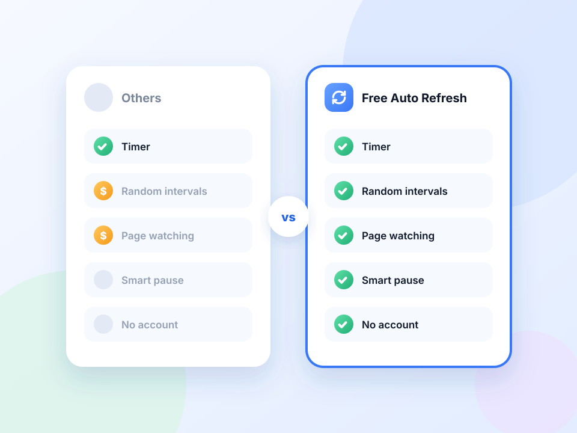

A simpler alternative to Auto Refresh Plus.
Auto Refresh Plus is the largest refresh extension, with a very deep feature set. Free Auto Refresh is the lighter choice: the core features, free, with no account and no network requests.

The short version
Auto Refresh Plus does far more than this extension: automatic clicks, macros, email and webhook alerts, schedules, and settings sync through an account. If you need those, use it.
Free Auto Refresh is for people who want the timer, random intervals, a page change alert and smart pause, without setting anything up or creating an account.
Trying it takes a minute
Install Free Auto Refresh
It can sit next to Auto Refresh Plus.
Use one extension per tab
Stop the other timer first so they do not fight.
Pick an interval, add a watch rule, press Start
That is the whole set-up.
Feature comparison
Based on each product's public documentation at the time of writing. Auto Refresh Plus has paid plans; see its own pricing page for what is included in each.
- Timer and random intervals: both.
- Stop when text appears, disappears or content changes: both.
- Watch one element with a CSS selector: both. Auto Refresh Plus also supports regex and XPath.
- Pause while typing, clicking or scrolling: both, in different forms.
- Desktop notification on a match: both.
- Sound, voice, email and webhook alerts (Discord, Slack, Telegram): Auto Refresh Plus only.
- Auto-click, macros, custom scripts, cookie tools: Auto Refresh Plus only.
- Account and settings sync: Auto Refresh Plus only. Free Auto Refresh has no account; you export and import a file instead.
- Network requests: Free Auto Refresh makes none.
Who should use which
Choose Free Auto Refresh if
you want something small that works in two clicks, costs nothing, and keeps everything on your own computer.
Choose Auto Refresh Plus if
you need automation beyond reloading: clicking, form steps, or alerts sent to your phone or a chat app.
Why fewer features can be a good thing
Every extra capability is another permission and another thing that can go wrong. Free Auto Refresh needs only storage, notifications and access to the page you refresh, and the popup shows just the essentials until you open Advanced settings.
Questions, answered.
Is Free Auto Refresh related to Auto Refresh Plus?
No. They are separate, unrelated extensions.
Is Auto Refresh Plus free?
It has a free tier and paid plans. Check its pricing page for the current split.
Does Free Auto Refresh have page monitoring?
Yes: text appears, text disappears, or content changes, with an optional CSS selector.
Can Free Auto Refresh send alerts to Telegram or email?
No. Alerts are a desktop notification and a flashing tab title.
Which one is more private?
Free Auto Refresh makes no network requests and has no account, so nothing leaves your browser.
Try the free alternative.
Every feature included. No account, no ads, no tracking.
Not seeing the feature you need?
Share the browser task you would like to make easier. Your idea helps guide what gets built next.